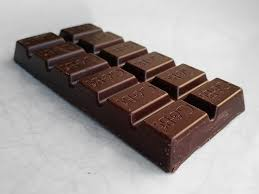

Chocolate

Recipe
How to make chocolate in just 10 minutes:
This homemade chocolate requires just 3 base ingredients,
is simple to prepare, and super easy to customize.
You can make your own vegan milk chocolate, dark chocolate, flavor it, or top it.
Ingredients
steps
- First, melt the cacao butter (grate/finely chop it first if it’s in big pieces) over a double boiler, stirring/whisking often.
Once melted, remove it from the heat
- Stir in the cocoa powder, maple syrup, and vanilla extract
- Pour into form and freeze
Voila!